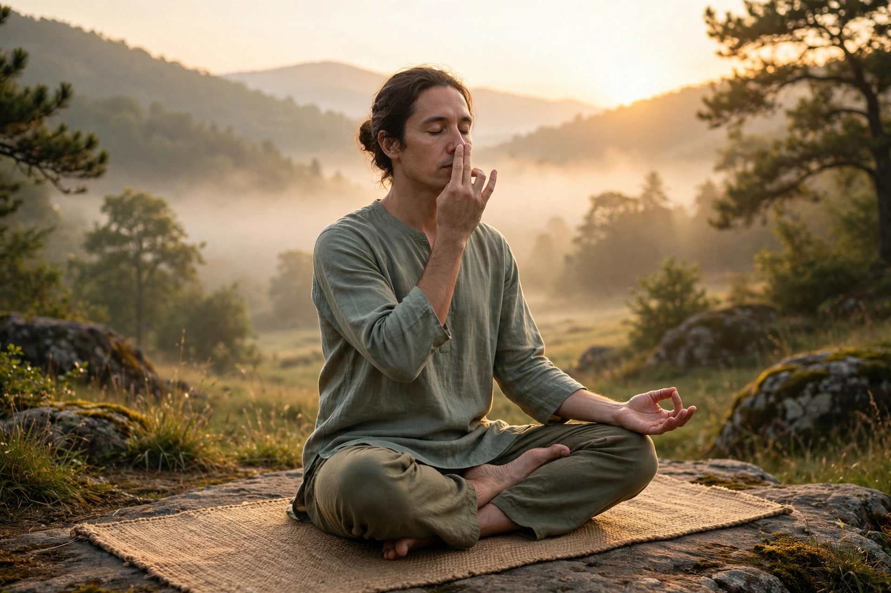

Prāṇāyāma (Sanskrit: प्राणायाम) is the yogic practice of focusing on breath. In Sanskrit, prana means "vital life force", and yama means to gain control. In Hinduism, pranayama is believed to regulate the flow of prana through nadis.
Patanjali's Yoga Sutras (2.49–51) define pranayama as regulation of inhalation (puraka), retention (kumbhaka), and exhalation (rechaka). It is the fourth limb of ashtanga yoga. The Hatha Yoga Pradipika describes techniques including nadi shodhana (alternate nostril), kapalabhati, bhastrika, ujjayi, and sitkari.
Slow breathing practices have evidence for reducing stress and blood pressure; forceful techniques carry risks for some practitioners. Pranayama is widely taught in modern postural yoga and mindfulness-based therapies.